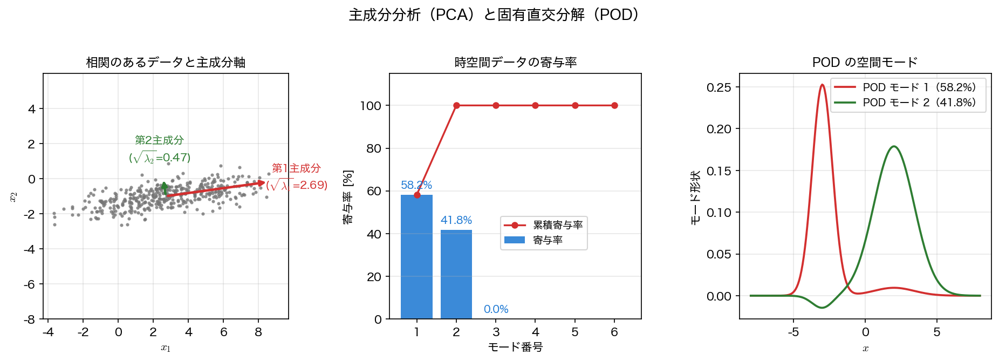

PCA・POD と擬似逆行列
前ページまでは行列を「圧縮するもの」として見た。同じ操作を「データを説明するもの」として読み直すと、統計の 主成分分析、流体の 固有直交分解、そして最小二乗の 擬似逆行列 が現れる。名前は分野ごとに違うが、計算しているのはどれも SVD である。
データ行列と中心化
\(N\) 個のサンプルをそれぞれ \(p\) 個の変数で測ったとき、\(N\times p\) の データ行列 \(X\) ができる（行がサンプル、列が変数）。ここで大事な前処理が 中心化 で、各列から平均を引いた
を使う。中心化しないまま \(X^\top X\) の固有分解をすると、
の第 \(2\) 項 ── 平均がつくる階数 \(1\) の項 ── が混ざり込む。この項は原点から遠いデータほど支配的になり、そうなると第 \(1\) 主成分は 平均の方向にほぼ一致してしまう（下の例のデータを \((100,20)\) だけ平行移動すると、第 \(1\) 主成分と平均方向のなす角の余弦は \(1.000000\) になる）。もちろん平均が小さければ両者の差はわずかなので、「中心化しないと必ず平均方向を指す」わけではない ── 支配的になったときに構造が見えなくなるから、あらかじめ取り除いておく、という話である。中心化したデータの 共分散行列 は
で、その固有ベクトルが主成分方向、固有値が各方向の分散になる。これが 主成分分析（principal component analysis, PCA） である。
PCA ＝ 共分散の固有分解 ＝ SVD
ここで前ページの関係 \(A^\top A=V\Sigma^\top\Sigma V^\top\) を思い出す。\(X_c=U\Sigma V^\top\) と分解すれば
となる。\(N>p\) のとき \(\Sigma\) は \(N\times p\) の長方形なので、\(\Sigma^2\) ではなく \(\Sigma^\top\Sigma\)（\(p\times p\) の対角行列で、対角成分は \(\sigma_i^2\)）と書くのが正しい。full_matrices=False の簡約 SVD なら \(\Sigma\) が \(p\times p\) になるので \(\Sigma^2\) と書いてよい。いずれにせよ 共分散行列の固有ベクトルは \(V\) の列、固有値は \(\sigma_i^2/(N-1)\) である。つまり PCA は共分散行列を作らなくても、データ行列の SVD だけで求まる。相関のある \(2\) 次元データで確かめる。
import numpy as np
rng = np.random.default_rng(1)
N = 400
D = rng.normal(0, 1, (N, 2)) @ np.array([[2.2, 0.0],
[1.7, 0.6]])
Xc = D - D.mean(axis=0) # 中心化（列ごとに平均を引く）
U, S, Vt = np.linalg.svd(Xc, full_matrices=False)
w, V = np.linalg.eigh(np.cov(Xc, rowvar=False))
w, V = w[::-1], V[:, ::-1] # 固有値を降順に並べ替える
print("σ^2/(N-1) :", np.round(S**2/(N - 1), 6))
print("共分散の固有値:", np.round(w, 6))
print(f"差 = {np.abs(S**2/(N - 1) - w).max():.2e}")
print(f"主成分方向のなす角の余弦 = {np.abs(np.diag(Vt @ V)).min():.12f}")
print("寄与率:", np.round(S**2/(S**2).sum(), 4))
print("第1主成分 v_1 =", np.round(Vt[0], 4))
σ^2/(N-1) : [7.235085 0.224431]
共分散の固有値: [7.235085 0.224431]
差 = 7.11e-15
主成分方向のなす角の余弦 = 1.000000000000
寄与率: [0.9699 0.0301]
第1主成分 v_1 = [-0.9905 -0.1375]
\(2\) つの計算は機械精度で一致し、主成分方向のなす角の余弦は \(1\)（＝平行）である。ここで返された \(v_1\) の成分が両方とも負なのは、前ページで述べた 符号の任意性 による ── \(-v_1\) も同じ主成分である。向きに意味を持たせたいときは自分で規約を決めて固定する。
理論上は同じでも、数値計算では SVD のほうを使うべき である。共分散行列を作ると条件数が二乗に悪化し、\(p\) が大きいと \(p\times p\) の行列を保持する手間もかかる。データ行列を直接 SVD すれば、この両方を避けられる。
寄与率と次元削減
\(i\) 番目の主成分が説明する分散の割合
を 寄与率 という。上の例では第 \(1\) 主成分だけで \(96.99\%\) を説明している。そこで \(2\) 次元のデータを第 \(1\) 主成分だけに射影して \(1\) 次元に落としてみる。
Z = Xc @ Vt[0] # 第1主成分だけに射影
rec = np.outer(Z, Vt[0])
err = np.linalg.norm(Xc - rec, "fro")/np.linalg.norm(Xc, "fro")
print(f"1 次元に落としたときの相対誤差 = {err:.4f}")
print(f"捨てた寄与率 = {(S[1]**2/(S**2).sum()):.4f} "
f"（√ = {np.sqrt(S[1]**2/(S**2).sum()):.4f}）")
相対誤差は「捨てた寄与率の平方根」にちょうど一致する。これは Eckart–Young の定理そのもので、\(X_c\) の階数 \(1\) 近似の誤差が \(\sqrt{\sum_{i>1}\sigma_i^2}\) になる ことの言い換えである。前ページの画像圧縮とまったく同じ式が、ここでは「次元削減で失う情報量」として読める。

POD ── 時空間データのモード分解
流体や波動のデータは、空間 \(x\) と時刻 \(t\) の \(2\) 変数で \(f(x,t)\) の形をとる。空間点を行、時刻を列に並べた スナップショット行列 \(F\)（\(n_x\times n_t\)）に SVD をかけると
と、空間形状 \(u_i(x)\) と時間変化 \(v_i(t)\) の積の和 に分解できる。これが 固有直交分解（proper orthogonal decomposition, POD） で、統計の PCA を時空間データに適用したものにほかならない。
題材として、\(2\) つの異なる空間構造がそれぞれ別の周期で振動する場を作る。真の階数は \(2\) である。
nx, nt = 200, 160
x = np.linspace(-8, 8, nx)
t = np.linspace(0, 4*np.pi, nt)
X, T = np.meshgrid(x, t, indexing="ij")
f = (np.exp(-(X + 3)**2)*np.cos(1.0*T)
+ 0.6*np.exp(-((X - 2)/2)**2)*np.cos(3.0*T))
fm = f - f.mean(axis=1, keepdims=True) # 時間平均を引く
Up, Sp, Vtp = np.linalg.svd(fm, full_matrices=False)
ratio = Sp**2/(Sp**2).sum()
print(f"データ形状 = {f.shape} 数値ランク = {np.linalg.matrix_rank(fm)}")
for j in range(4):
print(f"モード{j+1}: σ={Sp[j]:10.4f} 寄与率={ratio[j]:8.4%}")
print(f"上位 2 モードの累積寄与率 = {ratio[:2].sum():.10f}")
データ形状 = (200, 160) 数値ランク = 2
モード1: σ= 35.4389 寄与率=58.1895%
モード2: σ= 30.0400 寄与率=41.8105%
モード3: σ= 0.0000 寄与率= 0.0000%
モード4: σ= 0.0000 寄与率= 0.0000%
上位 2 モードの累積寄与率 = 1.0000000000
\(200\times160=32000\) 個の数からなる場が、たった \(2\) モード（\(2\times(200+160+1)=722\) 個）で完全に表せる。数値ランクも \(2\) と正しく判定されている。
この例では「\(1\) モードがほぼ \(1\) 周波数」に対応しているが、それは題材の \(2\) つのガウス型がほとんど重なっていないからにすぎない。厳密に言えば、空間構造の規格化内積は \(0.00603\)、中心化した時間波形どうしの規格化内積は \(0.01235\) で、どちらも完全な直交ではない。そのぶん各 POD モードには相手の成分が約 \(5\%\) 混ざる（時間係数のスペクトルで、相手の周波数の振幅が主ピークの \(4.8\%\) ある）。それでもピークの位置は元の \(\omega=1\) と \(\omega=3\) をきちんと拾う。
for j in range(2):
a = Vtp[j] * Sp[j]
A = np.abs(np.fft.rfft(a - a.mean()))
fq = np.fft.rfftfreq(nt, t[1] - t[0])
print(f"モード{j+1}の時間係数のピーク角周波数 = "
f"{2*np.pi*fq[int(np.argmax(A))]:.4f}")
POD は周波数で分けているのではない
上の結果を見ると POD が周波数分解をしたように見えるが、それは偶然である。POD が最大化するのはエネルギーであって、周波数の純度ではない。空間構造が重なっている場や、進行波（\(\cos(kx-\omega t)\)）を含む場では、\(1\) つの物理現象が複数の POD モードに分かれたり、逆に \(1\) つの POD モードに複数の周波数が混ざったりする。「各モードが単一の周波数を持つ」ことを保証する分解 が第14回の動的モード分解（DMD）で、POD との最大の違いがここにある。
モード数の選び方
実データでは特異値が厳密にゼロになることはないので、どこで打ち切るかを決めなければならない。よく使われるのは (1) 累積寄与率が \(99\%\)（あるいは \(99.9\%\)）を超える最小の \(k\)、(2) 特異値スペクトルの肘、(3) 雑音の大きさが分かるならその水準 ── 前ページのノイズ除去とまったく同じ判断である。打ち切りの数だけモデルの自由度が決まる ので、この選択が結果を大きく左右する。
擬似逆行列と最小二乗
SVD のもうひとつの顔が 擬似逆行列（Moore–Penrose pseudo-inverse） である。\(A=U\Sigma V^\top\) に対し、正の特異値だけを逆数にして
と定める。ここで \(A\) が \(m\times n\) なら \(\Sigma\) は \(m\times n\)、\(\Sigma^{+}\) はそれを転置した \(n\times m\) の長方形対角行列で、\(r\) は階数（正の特異値の個数）である。したがって \(A^{+}\) は \(n\times m\) になる。\(A\) が正則ならこれは \(A^{-1}\) に一致するが、長方形でも階数落ちでも定義できる点が違う。そして \(x=A^{+}b\) は、残差 \(\lVert b-Ax\rVert_2\) を最小にする解のうちノルムが最小のもの を与える。第7回で最小二乗を扱ったときの正規方程式 \(A^\top Ax=A^\top b\) は、\(A\) が列フルランクのときの同じ解である。
まず縦長（\(50\times5\)、方程式が多すぎる）の場合を見る。
rng = np.random.default_rng(2)
B = rng.normal(0, 1, (50, 5))
b = rng.normal(0, 1, 50)
Ub, Sb, Vtb = np.linalg.svd(B, full_matrices=False)
x_ls = np.linalg.lstsq(B, b, rcond=None)[0]
x_pinv = np.linalg.pinv(B) @ b
x_svd = Vtb.T @ ((Ub.T @ b)/Sb) # V Σ^-1 U^T b
print("最小二乗解 x:", np.round(x_ls, 6))
print(f"lstsq と pinv@b の差 = {np.abs(x_ls - x_pinv).max():.2e}")
print(f"lstsq と VΣ^-1U^Tb の差 = {np.abs(x_ls - x_svd).max():.2e}")
print(f"残差の直交性 |B^T(b-Bx)| = {np.abs(B.T @ (b - B @ x_ls)).max():.2e}")
最小二乗解 x: [ 0.03244 -0.090579 0.009502 0.198486 0.31131 ]
lstsq と pinv@b の差 = 1.67e-16
lstsq と VΣ^-1U^Tb の差 = 1.94e-16
残差の直交性 |B^T(b-Bx)| = 9.03e-15
\(3\) つの計算が一致し、残差が \(B\) の列空間に直交する（＝射影になっている）ことも確かめられた。次に階数落ちの場合を見る。\(5\) 列目を \(1,2\) 列目の和にすると階数は \(4\) に落ち、最小二乗解は一意でなくなる。
C = np.column_stack([B[:, :4], B[:, 0] + B[:, 1]]) # 5 列目 = 1 列目 + 2 列目
print("階数 =", np.linalg.matrix_rank(C))
xp = np.linalg.pinv(C) @ b
alt = xp + np.array([1.0, 1.0, 0.0, 0.0, -1.0]) # 零空間方向にずらした別解
print("pinv 解 x:", np.round(xp, 6))
print(f"pinv 解: 残差={np.linalg.norm(b - C @ xp):.6f} "
f"|x|={np.linalg.norm(xp):.6f}")
print(f"別解 : 残差={np.linalg.norm(b - C @ alt):.6f} "
f"|x|={np.linalg.norm(alt):.6f}")
階数 = 4
pinv 解 x: [ 0.028597 -0.097869 0.056759 0.085445 -0.069272]
pinv 解: 残差=7.532935 |x|=0.160366
別解 : 残差=7.532935 |x|=1.739459
\(2\) つの解は残差がまったく同じで、どちらも最小二乗解である。違うのはノルムで、擬似逆行列が選ぶのは ノルム最小の解 である。ここで正規方程式 \(C^\top Cx=C^\top b\) を使うと \(C^\top C\) が特異になって解けないが、SVD は零になる特異値を単に無視するので破綻しない。階数落ちや悪条件のデータを扱えることが、擬似逆行列を使う最大の理由 である。
小さい特異値を切るという判断
np.linalg.pinv や lstsq の rcond は「\(\sigma_i<\mathrm{rcond}\cdot\sigma_1\) なら \(0\) とみなす」しきい値である。逆数を取る操作は小さい \(\sigma_i\) を大きく増幅するので、雑音を含むデータでは わざと小さい特異値を捨てたほうが解が安定する。これが打ち切り SVD による正則化で、Tikhonov 正則化（\(\sigma_i\mapsto\sigma_i/(\sigma_i^2+\lambda^2)\)）とともに逆問題の標準的な道具になっている。ここでも「どこで切るか」がすべてを決める。
まとめ
- データ行列を中心化して SVD をかけると、\(V\) の列が主成分方向、\(\sigma_i^2/(N-1)\) が各方向の分散 になる。共分散行列の固有分解と機械精度（\(7\times10^{-15}\)）で一致するが、条件数の点で SVD のほうが数値的に有利である。
- 寄与率 \(\sigma_i^2/\sum\sigma_j^2\) の大きいものだけを残すのが 次元削減 で、そのときの相対誤差は「捨てた寄与率の平方根」（例では \(\sqrt{0.0301}=0.1735\)）── Eckart–Young の定理の言い換えである。
- 時空間データに同じことをすると POD になり、\(f(x,t)\simeq\sum\sigma_iu_i(x)v_i(t)\) と空間形状と時間変化の積に分かれる。例では \(32000\) 個の数が \(2\) モードで完全に表せた。
- ただし POD が最適化するのはエネルギーであって周波数ではない。各モードが単一の周波数を持つ保証はなく、それを与えるのが第14回の DMD である。
- 擬似逆行列 \(A^{+}=V\Sigma^{+}U^\top\) は最小二乗解を与え、階数落ちのときは ノルム最小の解 を選ぶ。正規方程式が破綻する状況でも SVD は破綻しない。
本講義との接続
ここまでで「データから最適な基底を作る」という道具立てがそろった。第14回では、これに 時間発展の情報 を組み込む。スナップショットの列 \(x_0,x_1,\dots\) の間に \(x_{k+1}\simeq Ax_k\) という関係を仮定し、その \(A\) の固有値・固有ベクトルを SVD 経由で取り出すのが 動的モード分解（DMD） である。POD が「エネルギーの大きい形」を返すのに対し、DMD は「どの形がどの周波数でどう成長・減衰するか」を返す ── 第8回の極、第11回の固有値と同じ問いを、方程式ではなくデータから答えることになる。